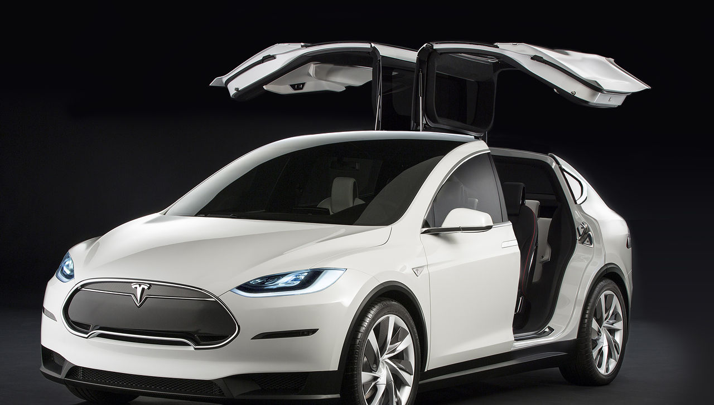
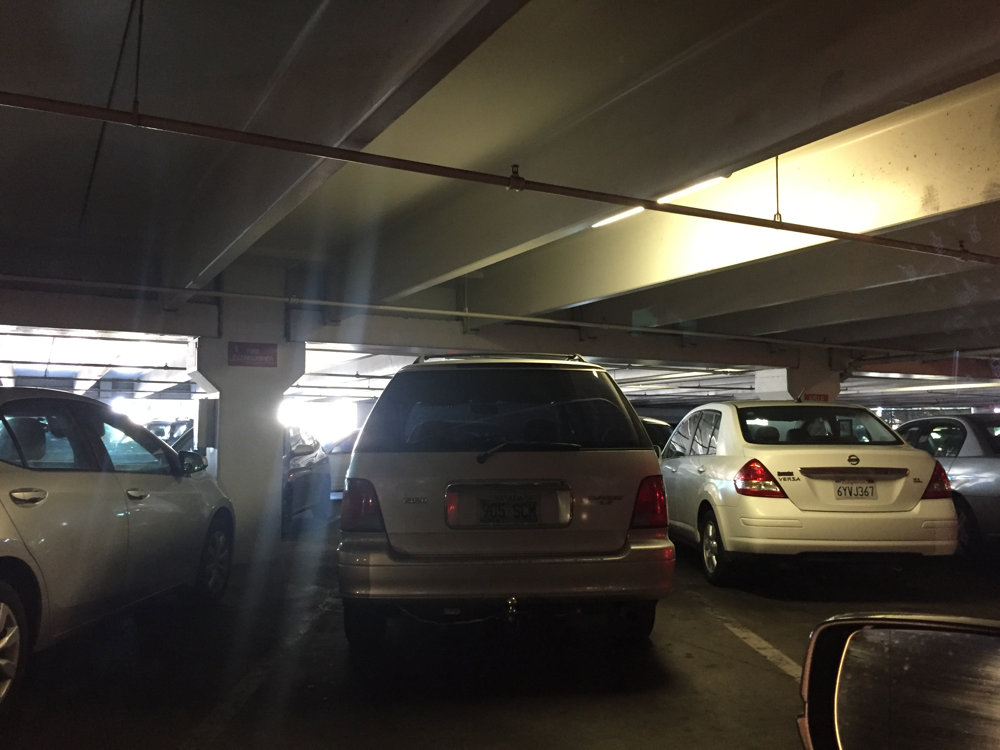

谈谈Tesla Model X的车门设计
(以下内容是《Tesla Model S的设计失误》一文中新加入的小节。由于写作时间相距太远，而且由于它的时效性，现在也把它单独提出来，独立成文。)
Tesla即将推出的SUV（Model X），不但继承了以上提到的Model S的各种问题（触摸屏，门把，……），而且还制造了新的问题。Model X具有一个别出心裁的车门设计，这车子看起来像一只展翅的鸟：

这样开的车门貌似更省空间，方便在狭窄的地方开门，而且看起来更酷，有点像McLaren或者Lamborghini。然而这样的设计，在我看来有以下几个问题：
车门升起时，车的后部上方有很大的空挡。下雨或者下雪的时候，雨雪会乘着车门张开的时候，大量飘进车里。
当车门升起来的时候，夹在门缝里的灰尘和渣滓会掉进车里。车顶上如果有积雪，也会掉进去。设想一下，下雪天开了一会车，打开后门，结果车顶上的雪都掉在后面的人头上了……
下大雪的时候，后面的车门可能被大雪压住打不开，或者导致电动机超负荷损坏。
由于门上的缝隙太长，这种设计更加容易出现由于密封圈老化而漏水的问题。
在顶棚很低的车库里可能会碰到天花板。这是一个很现实的问题，因为很多车库旁边的空间很多，顶棚却很低。比如，这次我到洛杉矶和拉斯维加斯旅游，经常遇到这样的车库：

顶棚不再能安装货架。不知道滑雪板和kayak该绑在哪里。这降低了Model X作为一个SUV的使用价值。
翻车的时候，后面的人无法打开车门逃生，必须打碎玻璃。这有可能是致命的缺点。
总的说来，在非常狭窄的地方开门，其实并不是什么很需要解决的事情。有钱买Model X的人，难道会经常把车停在狭窄的夹缝里吗？为了这种不常见的应用，用得着花这么大功夫设计个车门吗？就算你能开门，人出去之后挤不挤得出去，是另外一回事。如果地方实在太窄，你完全可以让后面的人先下车，然后再进车位。另外，滑动式的车门同样可以解决这个问题，根本用不着花大成本来实现升起来的车门。
如果你知道，Model X的车身宽度为81.6英寸，比Hummer H2, Cadillac Escalade和Ford F-150这样的庞然大物还要宽，你就会发现真正的问题不在于空间不够，而是在于这车实在太宽了。有多少人愿意开这么宽的车，是一个问题。